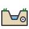

Hidrotehnisko būvju būvniecība

Būvējam būves, kas novada un regulē ūdeni grāvjos, upēs un dīķos, lai ūdens plūst tur, kur vajag, un krasti neizskalojas.
Ko darām
- Caurteku izbūve un nomaiņa ar nostiprinātām ieplūdēm un iztekām
- Tilti un pārbrauktuves pār grāvjiem
- Krastu un gultņu nostiprināšana ar akmeņiem
- Dīķu rakšana un ūdens novadīšana
Kam
Pašvaldībām, mežu un zemes īpašniekiem.
Citi pakalpojumi

Meliorācijas sistēmu būvniecībaGrāvji, drenāža, caurtekas un bebru dambju nojaukšana.- Grants un šķembu ceļu būvniecībaJaunu grants un šķembu ceļu būve.
 Ceļu seguma atjaunošanaProfilēšana, planēšana un materiāla papildināšana.
Ceļu seguma atjaunošanaProfilēšana, planēšana un materiāla papildināšana.- Autoceļu uzturēšanaGreiderēšana, grāvju un nomaļu kopšana.
- Ceļu ziemas uzturēšanaSniega tīrīšana un ceļu kaisīšana.
- Karjeru izstrādeGrants un smilts ieguve.
- Bruģēšanas darbiLaukumi, piebrauktuves un celiņi.
- Treilera pakalpojumiSmagās tehnikas pārvadāšana ar treileri.
 Transporta un tehnikas nomaTransports un tehnika ar vai bez operatora.
Transporta un tehnikas nomaTransports un tehnika ar vai bez operatora.